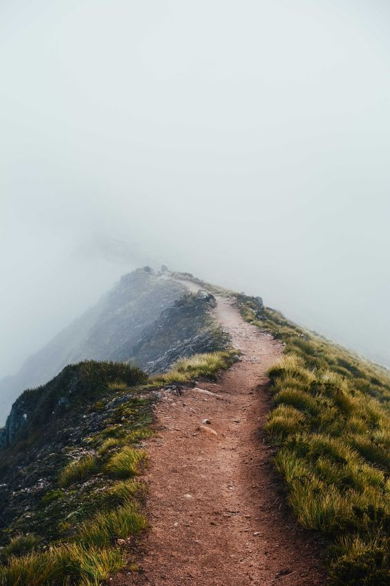
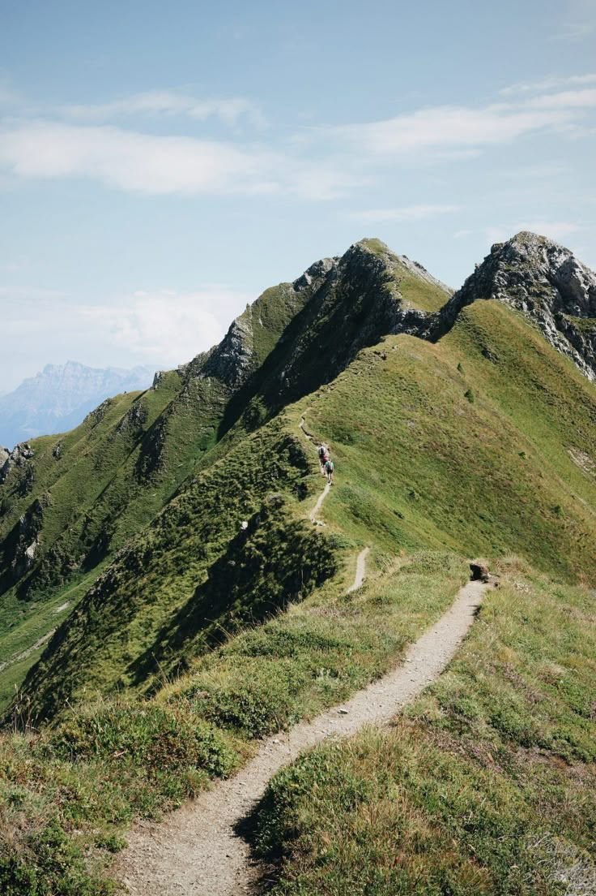

TrailCourir là où la montagne impose son rythme
Un article fictif sur la manière dont le dénivelé, le silence et la technicité transforment l’expérience de course. Une invitation à ralentir, observer et mieux durer.
Lire l’article →Bienvenue sur le blog Move Hard. En attendant les premiers vrais articles, cette page présente des contenus fictifs pour poser l’univers éditorial : montagne, trail, exploration, performance et inspiration.

TrailUn article fictif sur la manière dont le dénivelé, le silence et la technicité transforment l’expérience de course. Une invitation à ralentir, observer et mieux durer.
Lire l’article →
OutdoorCe faux contenu pose les bases d’une ligne éditoriale tournée vers l’effort, l’évasion et les paysages qui marquent durablement les athlètes d’endurance.
Lire l’article →Une maquette éditoriale pour imaginer les futurs articles Move Hard, entre récits de terrain, réflexion sur l’entraînement et esthétique outdoor premium.
Lire l’article →